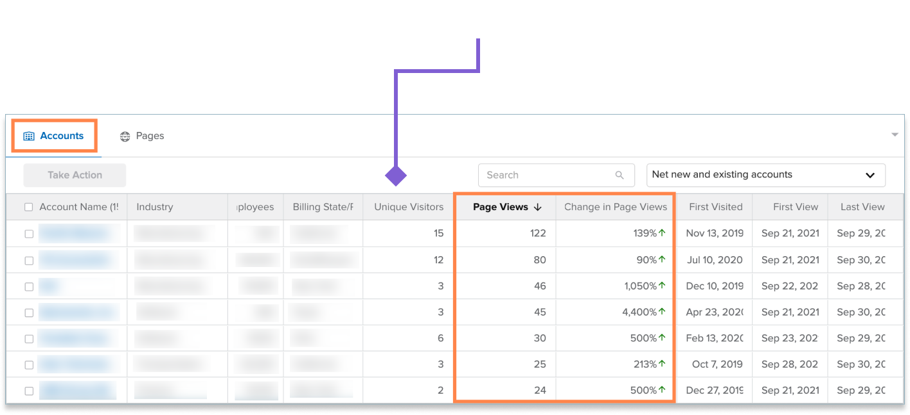
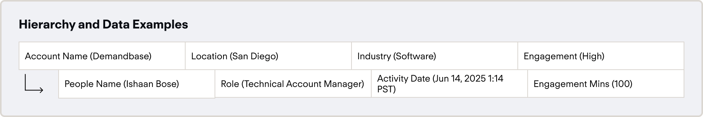
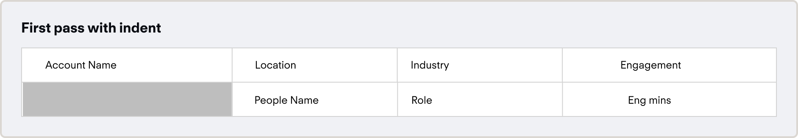
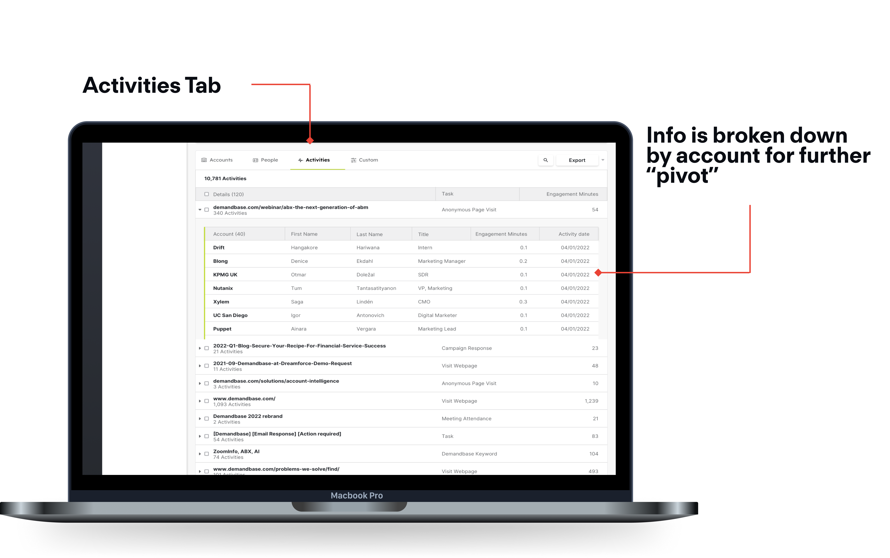
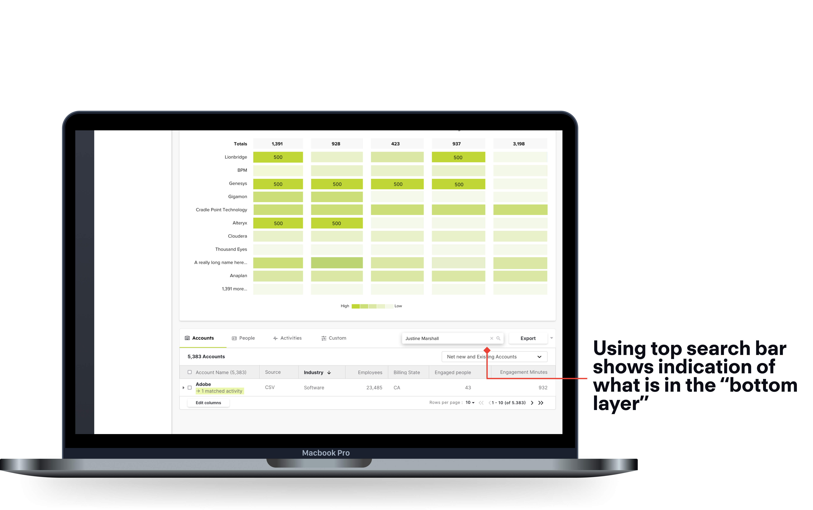

Demandbase
Campaign Comparison

Context
A lot of B2B design is predicated around datatables - presenting information within these tables in a clear, concise and contextual manner is an art of its own. This project was an ongoing undertaking to refresh and rebrand the platform datatables. While a big portion of this project was focused on the visual design of the tables and ensuring that we deliver a slick, elegant solution, an ongoing study was done on improving the usability of the tables, and ensuring the data is clean and human readable. We completed this through user testing and rounds of iteration to deliver an updated and powerful new component that went live in 2022.
Overview
When: Q2 - Q4 2021
Role: Sole Product Designer
Tools: Sketch, InVision, Zoom for UserTesting, DoveTail<
Preview of the solution

Project Goal
Redesign Demandbase's Tables, and create a new fluid component to be adopted throughout the product.
Outcome
Faster load times, new component added to design system.
Initial feedback
This project in particular stemmed from a piece of user feedback surrounding our table patterns:

Problem
Tables lack contextual information which gives you a heads-up on why or how something happened, and allows the user to perceive the information exchange going on.
Each product segment had different needs in terms of the type of data being shown, so the tables started to look drastically different in terms of the aesthetic.
How might we...
create powerful, human readable and contextual data tables in our core products?
Approach
To understand our problem statement better, I decided to breakdown what contextual really meant to me.

Breaking down the problem
I repeated this excercise with the second part of our problem statement.

Tying into feedback
From this analysis, I was able to map these issues to some of the feedback
Orienting to use case
The first thing I considered in making data more contextual was to provide a story. Why do I want to use this table? What metrics am I looking at? How often do I check?
These questions inform information architecture, prominence and default states, so they were important questions to answer.

Key takeways
The first thing I considered in making data more contextual was to provide a story. Why do I want to use this table? What metrics am I looking at? How often do I check?
These questions inform information architecture, prominence and default states, so they were important questions to answer.
To better understand howe we could show some of this, I conducted a group brainstorm, and then sorted by level of effort from an engineering perspective.
Solution introduction
From this I landed on Expand and collapse tables, and started to list some of the pros and cons.
First pass at understanding level
There are two parts to figure out - what are we showing/hiding, and the aesthetic of it. To start with what we are showing and what to hide, I considered just exactly what we are showing, and tried to create a story out of it:
Visualizing
By thinking of what this could look like in a table, we could hide some of the information that is associated. For the aesthetic to represent this, I initially kept the same visual cue with a blank first column to indicate branching, as seen below.
Engineering effort
Perhaps the most satisfying part of this process was learning that there already was a component within the JavaScript library that we used for this kind of use case to gain inspiration.

Testing
Our testing was conducted with a mix of external and internal users who were asked to complete basic tasks through a moderated session. Some of the key insights were packaged into cards:

From here we could identify some areas of improvement.
Iteration
Our testing showed that users would struggle with the hierarchy, so I proposed switching it a little. First, users first engage with an account, see the associated score, and then move over to individuals in that account and the activities associated with that person. To reflect this, I changed the hierarchy as such:

Results
The top level of the accounts tab can monitor the accounts that show the most engagement or interest in your product.

Clicking on a row opens the expandable row, showing the master detail below.
Seeing the top level of the people's tab allows you to quickly sort by a key metric like engagement, and then add the people to a list.
The next is digging into the activities for a specific person, this allows you to find out who to target in campaigns, or to reach out to directly for sales opportunities.

Seeing which type of activity is most successful allows you to tailor your marketing attempts to invest in successful activities, as well as see exactly who is engaging with critical types.
Exploring search
The last piece was thinking through the search pattern for this type of table. To get around this, I proposed a search that went through the entire table, and highlighted areas that match in both the top, and the bottom layer.
Searching this way would allow you to traverse both arrays at the same time, at the cost of search time.

Prototype
A full click through of the prototype
Key Takeaways
This was a really interesting project that really forced me to scope down general feedback into clean, concise improvements. In the end I was able to deliver a component that was playfully named “iTables” to showcase my effort on them. They went into production GA in June 2022, but a proof of concept was implemented in the end of 2021 with the ad plans table, which I will include below.
Next Steps
A followup on this project that would be a v2 improvement would be to see how we could adapt this table to new areas within the product. It is important to stay pragmatic and not apply the component willy nilly, but to still think of where we can make things more efficient.